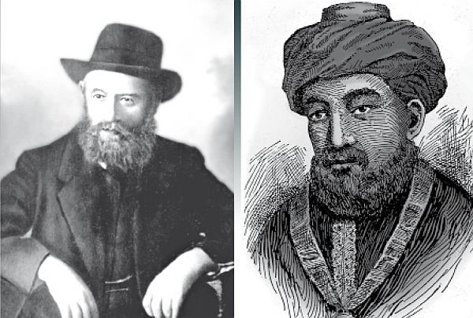

הרמב”ם של תורת החסידות
איחוד נגלה וחסידות, זוהי מטרת הבריאה. “כשתתפשט תורתך בעולם וידעו הכל לייחד ייחודים כמוך”, אמר המשיח לבעש”ט, אבוא • בדומה לרמב”ם שהנגיש את תורת הנגלה לעם, עשה זאת הרבי הרש”ב בדורו, ופתח את הצינור להשלמת הייעוד הנשגב בתקופתנו • סקירה היסטורית מרתקת על ההקבלה בין חיי כותב “היד החזקה” למייסד תומכי תמימי
איחוד נגלה וחסידות, זוהי מטרת הבריאה. “כשתתפשט תורתך בעולם וידעו הכל לייחד ייחודים כמוך”, אמר המשיח לבעש”ט, אבוא • בדומה לרמב”ם שהנגיש את תורת הנגלה לעם, עשה זאת הרבי הרש”ב בדורו, ופתח את הצינור להשלמת הייעוד הנשגב בתקופתנו • סקירה היסטורית מרתקת על ההקבלה בין חיי כותב “היד החזקה” למייסד תומכי תמימים – מוגש לקראת כ”ף מרחשון, יום הולדתו הקנ”ג של כ”ק אדמו”ר (מהורש”ב) נ”ע

החסיד מורי הרשב”ץ נ”ע קרא לאבי: “הרמב”ם של תורת החסידות”, שכן כל ענין אצל אבי הוא השכלה קבועה ומסודרת עם כל הסברו של הענין, דבר דבור על אופנו.
לקו”ד ח”ב ע’ רצו (בלה”ק ע’ 390)
דומה, שאין חסיד שלא נתקל בביטוי המכנה את מייסד ישיבת ‘תומכי תמימים’ בתואר “הרמב”ם של תורת החסידות”.
הסברים רבים נאמרו בהשוואה זו. החל מהסברו של הרבי הריי”צ, המגדיר את ההשכלה הקבועה והמסודרת כבסיס משותף לשניהם; ועד לביאורו של הרבי מלך המשיח שליט”א בכך שהרבי נ”ע מביא בדרושיו את מסקנת הענין, כספר הרמב”ם המסיק את ההלכות מן התלמוד.
סיבות אלו ואחרות, מציגים נקודות שונות המשותפות בין מחבר הספר ‘משנה תורה’ ל’רמב”ם של תורת החסידות’. טעמים שנאמרו ישירות מפי קדש-הקדשים אשר שכינה מדברת מתוך גרונו, והם היחידים אותם ניתן לקבוע כמסמרות ולומר שהם אלו שהביאו לכינוי זה.
אולם, הצצה למסעות חייהם של הרמב”ם מהאלף הרביעי וממלא מקומו בחמישי, מגלה כי אף במתווה עבודת הקודש שלהם וחיבוריהם – קו אחיד ומשותף הבולט לעין המשוטט בהיסטורי’ זו.
היד החזקה רוקמת עור וגידים
שלש תקופות מצויינות בחייו של רבינו משה בן מימון, המחלקות את מהלך התפתחות חיבורו הנודע בשם ‘משנה תורה’ לשלשה שלבים:
1. במשך שנות צעירותו, רכש הרמב”ם בקיאות עצומה בכל התורה שבכתב ושבעל-פה, עם פירושי’ ופסקי הגאונים שעלי’.
2. מצויד בבקיאות זו, פנה הרמב”ם לערוך תבנית לספרו. הוא סידר את התלמוד כולו – בעזרת ציון מראי-מקומות – לפי סדר ההלכות שעמד לכתוב בחיבור הי”ד1.
3. רק לאחר מכן, התחיל הרמב”ם בעבודה יסודית שנמשכה כעשר שנים, לכתיבת החיבור הראשון שהכיל את ההלכות בלבד, “השכלה קבועה ומסודרת . . דבר דבור על אופנו” – כלשונו של הרבי הריי”צ בקשר לאדמו”ר הרש”ב נ”ע.
שלשת השלבים הללו, מסמלים על שלשה שלבים בגילוי חידושו ומהותו של הרמב”ם עצמו:
בתקופה הראשונה, התבססה כל מעלתו של הרמב”ם על ידיעת הספרות התורנית שהיתה קיימת עד לזמנו. הוא השקיע את כל כולו בהתעמקות בתורה שקדמה לו.
בשלב השני, החל הרמב”ם לערוך מתווה מסודר להנחלת התורה שבעל-פה לפי שיטתו ומטרתו – לערוך ספר הלכות הלכות בו יוכל קטן כגדול לקרוא ולמצות את ידיעתו בתורה שבעל-פה. כעת, היתה תורת קודמיו ככתבה פרושה לפניו, מוכנה לקבל את פסיקותיו וחידושיו.
רק לבסוף, בכתיבת חיבור ‘משנה תורה’, התגלתה בשלימות מעלתו של הרמב”ם כפוסק הלכות, המכריע בין השיטות הרבות ומעניק לקורא ‘השכלה קבועה ומסודרת’.
ההיסטורי’ חוזרת על עצמה
יותר משבע-מאות שנה חולפות, ובעולם מפציע אורו הגדול של נשיא ליובאוויטש בדור החמישי, כאשר גם הוא מתנוצץ בהדרגה – בשלבים דומים להתגלות אורו של הרמב”ם בדורו.
בחודש תשרי תרמ”ג, חותם נשיאה הרביעי של תנועת חב”ד את דורו ומעלותיו, ומותיר את חסידיו ואת כלל-ישראל המפצירים בבנו לקבל על עצמו את כתר הנשיאות.
למרות שהמהלך הטבעי אמור להוביל להתחלה מיידית של הנהגת החסידים בידי הרבי הרש”ב, הוא מסרב לכך בכל תוקף2.
את הנשיאות בפועל, יקבל הרבי (באופן רשמי) רק כעבור אחת-עשרה שנים. אך למפרע, ניתן לראות באותן שנים ביטוי לאסיפת הבקיאות בתורת אבותיו, על מאמריהם יבסס את תורתו ודרושיו. בדומה לשנות לימודיו הראשונות של הרמב”ם, בהם עסק אך ורק בצבירת הבקיאות בכתבי חז”ל והגאונים שלפניו.
“בקיץ העבר”, מספר הרבי נ”ע על עצמו בכסלו תרמ”ח3, “וכן בתחילת החורף עסקתי ת”ל בדא”ח בענינים עמוקים מאוד הצריכים יגיעה רבה בחיפוש במקומות רבים ובעיון להבין הדברים היטב ולבררם וללבנם”.
במשך אותן שנים, מעתיק הרבי את מאמריו של אביו, הרבי מהר”ש נ”ע, ומוסיף עליהם הגהות שונות, הכוללים לרוב ציונים רבים לתורת אבותיו, והסברת דבריהם בבירור.
גם המאמרים שאומר הרבי נ”ע בתקופה זו – מיוסדים כולם על דרושי אביו הרבי מהר”ש נ”ע, ורבותינו נשיאינו שלפניו.
“ההתפעלות שהיא מדא”ח שלהם אין לשער”, מספר חסיד שהי’ נוכח בליובאוויטש בשנת תרמ”ג4. ומבהיר: “ואל תאמרו שלא היו ‘מבינים’, כי על ש”ק פ’ לך-לך הי’ בס”ה קרוב לחמשה מנינים וכולם גדולים ומביני מדע כנצרך”.
החסידים יוצאים מכליהם “ושאלו את פיהם מאין לקחו הדרושים, והראו אשר רק מסעיף אחד של אדמו”ר נבג”מ יצא להם כל ההמשך”…
בהמשך התקופה נוהג הרבי נ”ע “בדרך של התבודדות, לעשות עם עצמו ובתוך עצמו”5. כל עבודת הקודש שלו מתמקדת אך ורק בהתעמקות בתורת החסידות – כיסוד לתורתו בתקופה בה יגלה את אורו וחידושו לעין כל.
כדוגמא לכך, תשמש עדותו של בנו כ”ק אדמו”ר הריי”צ על התעסקותו של הרבי נ”ע בספר ‘אמרי בינה’ של הרבי האמצעי6:
“כ”ק אאמו”ר נ”ע אמר על עצמו שבעת ההיא מרוב יגיעתו והעמקותו בהענינים באמרי בינה איז באַ אים אויס געקראָכן די האָר פון קאָפּ (=נשר שער ראשו) ומזה הי’ היסודות דהמשך הגדול בשעה שהקדימו תער”ב-ע”ו”.
הרבי עולה לכס הנשיאות
שנת תרנ”ג היתה “השנה הראשונה שחסידי ליובאוויטש התעוררו בחיות מחודשת בראותם ממלא מקום על כסא הנשיאות של ליובאוויטש”.
“החסידים חשו שיש להם רבי, מנהיג ומדריך, ושמש ליובאוויטש החלה שוב לזרוח. לאחר הפסקה של עשר שנים, הנה שנת תרנ”ג היא שנת ההתעוררות של ליובאוויטש”7.
בליל ראש השנה תרנ”ד, ניגש הרבי נ”ע להתפלל תפילת ערבית במקומו הקדוש של אביו, דבר המהוה צעד מכריע בקבלת הנשיאות בגלוי.
במשך השנה מתחיל הרבי נ”ע לקבל יהודים ליחידות, מוציא את מאמריו בכתב, ועונה על שאלות ששולחים החסידים בעולם8.
תורתו של הרבי נ”ע מתרחבת. “מחורף תרנ”ד . . התרחבה מאד ב”ה תורת החסידות והרבה ענינים הוסברו בהרחבה”9.
במאמרים שמוציא הרבי נ”ע בכתב, מוצאים מיעוט ניכר בציון לדרושי רבותינו נשיאינו שלפניו ופלפול בהם.
סגנון כתיבת המאמרים מפסיק להיות תמציתי ומסכם – כפי שהי’ עד אז, ומתחיל לקבל את סגנונו ומבנהו הייחודי של הרבי נ”ע.
עם זאת, מיוסדים המאמרים של חמשת השנים הראשונות (תרנ”ד – תרנ”ח) בעיקר על מאמריו של הרבי מהר”ש נ”ע, עד שניתן לומר כי בחלקם הגדול אין אלו אלא ‘העתקות’ ממאמרי אביו, בצירוף הגהות משלו.
תקופה זו, מקבילה לשלב בו עבד הרמב”ם על ייסוד וביסוס חיבורו העתידי, וסידור התבנית שתוביל אותו למטרתו – התורה השלימה אותה חפץ להעניק לכלל ישראל בדורו.
התורה השלימה
“קיץ תרנ”ח בהיותנו בנאות דשא באליווקא הייתי נרעש מכך שאבי שקוע במחשבות.
“אבי הי’ נשאר לשבת לעיתים קרובות בגן, תפוס מחשבות במשך כמה שעות.
“כפי שסיפר לי לאחר מכן, הרי בזמן זה של ישיבתו בגן, הרהר במאמר יו”ט של ר”ה על כל המשכיו, שאמרם לאחר מכן מר”ה תרנ”ט עד פרשת וירא”10.
שנת תרנ”ט מהוה ציון דרך ומפנה ניכר בתורת הרבי נ”ע.
רוב מאמריו נכתבים על ידו עצמו, ואמירת ‘המשכים’ מתחילה באופן סדיר. דיוקם של החסידים בלימוד תורת הדא”ח הולך וגובר, ודרכו היסודית והברורה של הרבי נ”ע נגלית לכל.
עיון והשוואה בין מאמרי שנת תרנ”ט ואילך למאמרי השנים הקודמות, מעלה מסקנא ברורה כי הצעת הענינים בצורה מוארת וברורה – מתחילה משנה זו.
מבט במפתח המאמרים שנערך מאוחר יותר על-ידי הרבי הריי”צ, מגלה כי “תוכן (התחלת) המאמר” החל להתווסף למפתח רק משנת תרנ”ט ואילך. יתכן, כי גם הסיבה לכך נעוצה בהרחבה המסודרת שהחלה אז.
זהו השלב הסופי בהתפתחות תורתו של הרבי נ”ע. אותה “השכלה קבועה ומסודרת עם כל הסברו של הענין, דבר דבור על אופנו” – באה לידי ביטוי’ השלם בתקופה זו.
לא מפתיע איפה, כי דוקא לאחר תיאורו של הרבי הריי”צ על “קיץ תרנ”ח”, הוא בוחר להביא את פתגמו של הרשב”ץ המכנה את הרבי נ”ע כ”הרמב”ם של תורת החסידות”…
סביר אף להניח, שאת פתגמו זה אמר הרשב”ץ באותן שנים. שכן, הרשב”ץ למד עם הרבי הריי”צ משנת תרנ”ד ועד שנת תר”ס, ונפטר בשנת תרס”ה11.
הלכות הלכות
חידושה של שנת תרנ”ט – מתבטא גם בתחום אותו מציין הרבי מלך המשיח שליט”א בקשר להשוואת הרבי נ”ע לרמב”ם12:
“בדרושי הצמח צדק מובאים כמה וכמה דעות בנוגע לענין אחד, ועל דרך זה מצינו בדרושי אדמו”ר האמצעי שבכמה מקומות כותב באופן אחר ממה שכתב לפני זה, וכותב על זה “ודלא כדעיל”. ועל דרך זה מצינו בדרושי אדמו”ר הזקן שמבאר ענינים מסויימים באופנים שונים, לפי כמה דעות.
“אבל בדרושי כ”ק אדמו”ר מהורש”ב נ”ע מובאת מסקנת הענין – בדוגמת המסקנה ופסק ההלכה בפועל ברמב”ם”.
גם מעלה זו שבדרושי הרבי נ”ע – מגיעה לשלימותה רק בתקופה המתחילה בשנת תרנ”ט. בעוד שבעשרת השנים הראשונות (תרמ”ג – תרנ”ג) עסק הרבי נ”ע בבירור דברי רבותינו נשיאינו, והשאיר מקומות רבים ב”צ”ע”!
החל משנת תרנ”ד, ובעיקר משנת תרנ”ט – הולכים ומתמעטים הענינים הנשארים ב”צ”ע”, והצעת הדברים היא למסקנא ו’הלכה’.
שלבים מיוחדים בהתפחותה ושלימותה של תורה מסודרת זו – מציינים המשך תרס”ו, המשך תער”ב, ובמיוחד שנתו האחרונה בעלמא דין – בה מקפיד הרבי נ”ע במיוחד ליישב ולתרץ כל ‘צריך עיון’13.
בכך ניתן ביטוי לדבריו של הרבי מלך המשיח שליט”א (בקשר לרבי המהר”ש): “בשנים הראשונות לנשיאותו עדיין ניכרת ההשפעה של הנשיא שלפניו, וככל שנכנסים יותר ויותר בענין הנשיאות מתגלית דרכו המיוחדת של נשיא זה”14.
תומכי תמימים – תורה תמימה
שנת תרנ”ט מביאה בכנפי’ גם את חידושו העיקרי של “הרמב”ם של תורת החסידות” – איחוד נגלה ונסתר דתורה, בייסוד ישיבת תומכי תמימים, בה לומדים התלמידים “תורה תמימה”, נגלה וחסידות כאחד.
בשלהי שנת תרנ”ז מייסד הרבי נ”ע את ישיבת “תומכי תמימים”, ובשנת תרנ”ט עוברת הישיבה ממקום משכנה בזעמבין – לליובאוויטש, קרוב לנשיא הדור שהשלים את בניית תורתו הברורה והמסודרת.
בכך פותח המשיח שבדורו את מלחמת השם, ומכשיר את צבא “חיילי בית דוד” – ללחום באלו “אשר חרפו עקבות משיחך”, עליהם נמנים בעיקר “בני תורה, אלא שחלשים הם באמונת הגאולה. הם אף מבארים זאת בטעמים של יראת שמים, אבל באמת זוהי חלישות אמונה בביאת המשיח”15.
‘המשך תער”ב’ ו’תורת אמת’ מתבשלים בוינה
גם המשך התפתחות הישיבה קשור בקשר הדוק עם התפתחותה של תורת הרבי נ”ע:
בשנת תער”ב ייסד הרבי נ”ע את ישיבת ‘תורת אמת’ בחברון. ישיבה אלי’ שלח בחורים מ’תומכי תמימים’ שהפיצו את רוחה של הישיבה בארץ הקודש.
אכן, הישיבה מילאה את ייעודה ומטרתה, וכפי שמעיד המשפיע רש”ז הבלין במכתבו: “אם היית רואה איך שהבחורים לומדים עם האברכים ועם הנערים, ובמראות קטנות הוא כמו בישיבה של ליובאוויטש. והבחורים שמאריכים בתפילה הוא כמו בליובאוויטש”.
הקמת ישיבה זו היתה “משאת נפש . . כ”ק אאמו”ר הרה”ק שליט”א . . ומחשבתו הטהורה כמעט תשע עשרה שנה” – כלשונו של הרבי הריי”צ בהתייחסו לתקופת שהותו של אביו נ”ע בוינה בחורף תרס”ג16.
מענין, כי באותו חורף בוינה הונח גם היסוד להמשך תער”ב – שפתח שלב נוסף ב’סידורה’ של תורת החסידות – כפי שמספר הרבי מלך המשיח שליט”א17:
“פעם נסע כ”ק אדמו”ר מהורש”ב נ”ע ביחד עם בנו כ”ק מו”ח לוינה18. כדרכם, התאכסנו במלון כל אחד בחדר בפני עצמו, ונוסף לכך – חדר משותף לשניהם. כאשר נכנס כ”ק מו”ח אדמו”ר – ראה את כ”ק אדמו”ר נ”ע יושב על הספה, עיניו פתוחות, ואינו מבחין מה נעשה מסביבו. כעבור שעה נכנס שוב וראה שממשיך לשבת באותו מצב מבלי לנוע . . וכך ישב על מקומו במשך שעות אחדות שקוע במחשבתו, כמי שנמצא בעולם אחר.
לאחר שהתעורר – לא ידע איזה יום זה, באיזה מקום נמצאים וכו’… ויש אומרים שלאחרי זמן גילה כ”ק אדמו”ר נ”ע לכ”ק מו”ח אדמו”ר שעניני החסידות שבהם התבונן באותן שעות היו היסוד להמשך תער”ב הידוע”.
המטרה הושגה: העולם כולו ‘תומכי תמימים’!
אין מתאים יותר לחתום סקירה היסטורית כזו בעדותו ההיסטורית של הרבי מלך המשיח שליט”א, החותמת אף היא את מוסד חייו של הרבי נ”ע שעל הקמתו מסר את נפשו:
“דורנו זה – דור השלישי לאדמו”ר נ”ע ולתלמידיו חיילי בית דוד . . ובדורנו זה נמצאים כבר בשנת הצדי”ק – לאחרי סיום שנת הפ”ט, הקשורה עם מזמור פ”ט, שסיומו וחותמו “אשר חרפו עקבות משיחך”, “ברוך ה’ לעולם אמן ואמן”, גמר הנצחון דמלחמת בית דוד”19.
“שתקופה זו (שמתוארת בסיום מזמור זה) נסתיימה כבר לאחרי מעשינו ועבודתינו . . ועתה עומדים בתקופה השייכת למזמור צדי”ק, שסיומו וחותמו בפסוק “ויהי נועם ה’ אלקינו עלינו גו’ ומעשה ידינו כוננהו”, ש”תשרה שכינה במעשה ידיכם”, שזהו תשלום השכר על כללות מעשינו ועבודתינו”20.
נסתיימה המלחמה. מעיינות תורת החסידות חלחלו ובקעו כל סלע ואבן נגף – כאשר כ’פתיחת הצינור’ לזה שימש הרבי נ”ע שהנגיש אותה לעם כמו הרמב”ם בדורו. איחוד הנגלה והנסתר הושלם, והעולם כולו עומד ומצפה לאותו רגע נכסף שבו אכן יגיע איחוד זה ל’נגלה’, ולמול מלכנו הנגלה בפנינו יכריז: יחי אדוננו מורנו ורבינו מלך המשיח לעולם ועד!
1) עובדה זו מצוינת על-ידי הרבי מלך המשיח שליט”א במכתב שנדפס בלקו”ש ח”כ ע’ 548.
בספר “עבודת הקודש” לרשד”ב לוין (ע’ קנו-ז) הביא ממענות-קודש כ”ק אד”ש מה”מ אליו בהמשך למכתב זה, וביאר ענין זה בארוכה.
2) ראה השיחה במדור דבר מלכות בגליון זה.
3) אג”ק שלו ח”א ע’ כב.
4) מגדל עז ע’ רכד.
5) לקו”ד ח”א קמד, א (בלה”ק ע’ 203 בראשו).
6) סה”ש תר”פ – תרפ”ז ע’ 52.
7) לקו”ד ח”א קעט, ב (בלה”ק ע’ 252).
8) חנוך לנער – ראשי פרקים – שנת תרנ”ד. לקו”ד שם.
9) לקו”ד ח”ב רצה, ב (בלה”ק ע’ 392).
10) לקו”ד ח”ב ע’ רצו.
11) תולדות הרשב”ץ – התמים ח”א ע’ עט.
12) התוועדויות תשמ”ב ח”ו ע’ 209.
13) סה”ש תש”ד ע’ 94.
14) התוועדויות תשמ”ו ח”א ע’ 164.
15) שיחת שמח”ת תרס”א – קונטרס “כל היוצא למלחמת בית דוד”.
16) אג”ק שלו ח”א ע’ נז ואילך.
17) ש”פ שמיני תשד”מ. הוספות ללקו”ש חכ”ז.
18) מעדותו של הרבי הריי”צ עצמו בסה”ש תרצ”ו ע’ 45 – מובן שהכוונה לביקור בחורף תרס”ג.
19) ש”פ וירא, ח”י מרחשון ה’תשנ”ב.
20) ט”ו אלול ה’תנש”א.